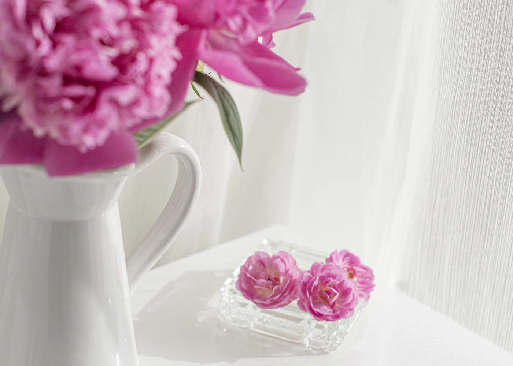

見つける
ヒアリングを通じて、事業の内容、強み・魅力、届けたい相手を整理します。
SERVICE
事業の魅力や強みを整理し、ブランドとして形にする。
Web・SNS・LINE・印刷物へ一貫して届けます。
OUR APPROACH
見た目をつくる前に、事業に込めた想いや魅力を整理するところから始めます。
ヒアリングを通じて、事業の内容、強み・魅力、届けたい相手を整理します。
ブランドコンセプトと方向性を定め、各媒体を一貫したデザインで制作します。
公開後もWebサイトやコンテンツを育てていく月額サポートをご用意しています。加入は任意です。
BRAND DESIGN
事業の魅力を整理し、ブランドコンセプトを定め、ホームページやSNS、印刷物まで一貫したデザインで形にします。
すべての制作物にブランドコンセプトを反映し、媒体ごとにデザインがばらばらにならない、一貫性のあるブランドを構築します。
ブランド設計プランの料金を見るWEB & GRAPHIC
ホームページ、SNS、LINE、名刺・ショップカードなど、触れる媒体が変わってもブランドの印象がつながるよう、ひとつのコンセプトを各制作物に反映します。
標準対応と別途費用を見る
GROWTH SUPPORT
初期制作とは別に、公開後のWebサイトやコンテンツを維持・更新・改善していく月額サポートをご用意しています。加入は必須ではなく、ご希望に応じてお選びいただけます。
Webサイトを維持し、安心して使い続けられる状態を支えます。
定期的な情報発信と分析・改善によって、Webサイトを育てます。
Webサイトの管理にとどまらず、マーケティングや集客戦略まで支援します。
CONSULTATION
滋賀県大津市・守山市・栗東市・草津市のお店へ伺い、45〜60分程度お話をお聞きします。大津市内は出張費なし、その他の地域は事前にご案内します。訪問相談と相談後の提案書・見積もりの作成は無料です。
QRコードを読み取るか、画像をタップしてLINEでご連絡ください。